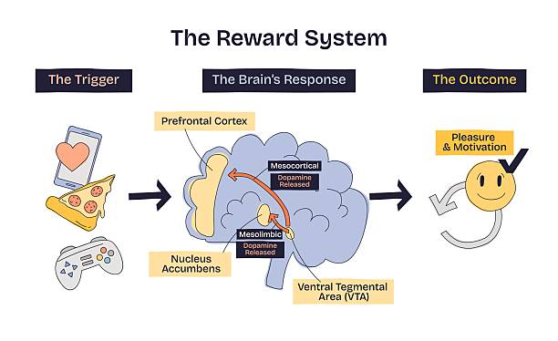

Pernahkah kamu membuka game hanya untuk "mengisi waktu sebentar," lalu tanpa sadar sudah bermain berjam-jam? Atau mungkin kamu merasa gelisah, tidak tenang, bahkan marah ketika terpaksa berhenti bermain? Jika ya, kamu tidak sendiri, dan yang lebih penting, ini bukan kelemahan karaktermu.
Game online modern, dari Mobile Legends, PUBG, hingga Genshin Impact, dirancang oleh tim yang melibatkan psikolog perilaku, desainer pengalaman, dan ahli neurologi. Tujuannya satu: membuat kamu bertahan selama mungkin di dalam game. Organisasi Kesehatan Dunia (WHO) bahkan sudah memasukkan gaming disorder ke dalam klasifikasi penyakit internasional ICD-11 sebagai gangguan mental yang nyata. Berikut penjelasan ilmiahnya.
Otak dan Dopamin: Akar dari Semua Ini
Untuk memahami kenapa game begitu adiktif, kita perlu memahami cara kerja sistem reward di otak manusia. Di bagian dalam otak, terdapat struktur yang disebut nucleus accumbens, yaitu pusat kendali rasa senang dan motivasi. Ketika kamu melakukan sesuatu yang menyenangkan, otak melepaskan neurotransmitter bernama dopamin.
Menurut dr. Kristiana Siste, SpKJ(K), praktisi kesehatan jiwa dari Departemen Psikiatri FK Universitas Indonesia, pada orang yang gemar bermain game, neurotransmitter dopamin akan meningkat saat ia bermain sehingga menimbulkan rasa senang atau pleasure effect. Manusia dilahirkan dengan kadar dopamin yang rendah dan secara alami selalu mencari cara atau kegiatan yang bisa meningkatkan dopaminnya. Maka dari sisi biologi, seseorang yang memiliki gangguan pada sistem dopamin ini akan lebih rentan mengalami kecanduan.
Dopamin tidak hanya dilepaskan saat kamu mendapatkan reward, tapi juga saat kamu mengantisipasinya. Inilah yang disebut "dopamine anticipation loop." Saat loading screen muncul, saat kamu masuk matchmaking, saat kamu hampir menyelesaikan satu quest, otak sudah melepaskan dopamin bahkan sebelum hasilnya terlihat. Di sinilah akar dari rasa "nagih" yang sering kita alami.

Mekanisme Psikologis yang Membuat Game Adiktif
Kecanduan game tidak datang dari satu faktor tunggal. Menurut Kementerian Kesehatan RI, ada tiga kelompok besar faktor yang menentukan seberapa rentan seseorang terhadap adiksi game online, yaitu faktor biologi, psikologi, dan sosial. Ketiganya saling berinteraksi dan memperkuat satu sama lain.
Dari sisi desain game itu sendiri, para pengembang secara sadar menggunakan berbagai teknik psikologis yang sudah terbukti secara ilmiah untuk memaksimalkan keterlibatan pemain. Bukan kebetulan bahwa kamu selalu merasa "nanggung" untuk berhenti atau terus ingin kembali lagi keesokan harinya. Berikut adalah mekanisme utama yang bekerja di balik layar:
Variable Reward Schedule
Reward yang tidak terduga dan tidak konsisten jauh lebih adiktif dibanding reward yang bisa diprediksi. Prinsip ini identik dengan cara kerja mesin slot kasino, di mana ketidakpastian itulah yang membuat otak terus ingin mencoba lagi.
Progress Bar dan Level Up
Visualisasi progres seperti bar pengalaman atau pencapaian rank memicu pelepasan dopamin secara terus-menerus. Otak manusia memiliki dorongan bawaan untuk "menyelesaikan sesuatu," dan game mengeksploitasi dorongan ini dengan sangat efektif.
Daily Quest dan Login Reward
Sistem ini memaksa pemain kembali setiap hari dengan iming-iming hadiah eksklusif. Psikologi di baliknya sederhana namun kuat: melewatkan satu hari terasa seperti mengalami "kerugian," bukan sekadar melewatkan kesenangan.
Tekanan Sosial dan Akuntabilitas
Dari sisi psikologi sosial, sistem guild, squad, dan ranked match menciptakan rasa tanggung jawab terhadap orang lain. Tidak bermain terasa seperti "mengecewakan" rekan tim, dan tekanan sosial semacam ini sangat sulit dilawan.
Jebakan Sunk Cost
Semakin banyak waktu dan uang yang sudah diinvestasikan ke dalam game, semakin sulit untuk berhenti meski secara rasional sudah tidak menguntungkan. Ini adalah bias kognitif klasik yang dikenal sebagai sunk cost fallacy, dan game modern dirancang untuk memperparah jebakan ini.
Sistem Ranking Kompetitif
Sistem ranking menciptakan kebutuhan konstan untuk naik tingkat sekaligus rasa takut yang besar untuk turun. Akibatnya, tidak ada sesi bermain yang pernah terasa benar-benar cukup, dan pemain selalu merasa harus bermain satu pertandingan lagi.
Ketika Kecanduan Berujung Tragedi
Kecanduan game bukan isu hipotetis. Dampaknya sudah terasa nyata di kehidupan sehari-hari masyarakat Indonesia, dari kasus yang mengejutkan hingga yang perlahan-lahan merusak masa depan generasi muda.
Mantan Menteri Kesehatan menyoroti sebuah kasus menggemparkan: seorang anak diduga membunuh ibunya sendiri yang dikaitkan dengan kondisi kecanduan game online. Kasus ini menjadi pembahasan dalam kajian ilmiah bertajuk Partisipasi Kesehatan sebagai Ideologi Kesehatan Bangsa dan disebut sebagai alarm serius bahwa adiksi game dapat memicu perilaku agresif ekstrem dan hilangnya kontrol diri. (Sumber: MetroTV, 3 Januari 2026)
Di Denpasar, Bali, seorang siswi SD berinisial KA (13 tahun) dilaporkan melompat dari lantai 3 sebuah gedung. Kejadian ini mendorong pejabat setempat mengeluarkan imbauan resmi kepada warga untuk lebih waspada terhadap bahaya kecanduan game online pada anak-anak. Kasus ini menegaskan bahwa dampak psikologis dari adiksi game bisa jauh melampaui gangguan prestasi akademis. (Sumber: Bali Post, 23 April 2026)
Dua kasus di atas bukan anomali. Data dari Komisi Perlindungan Anak Indonesia (KPAI) juga mencatat kasus siswi SMP di Semarang yang tidak naik kelas akibat kecanduan game online. Prestasi akademis yang anjlok, hubungan sosial yang renggang, dan konflik keluarga yang memanas adalah dampak yang jauh lebih umum terjadi, meski tidak selalu masuk berita.
Gacha dan Loot Box: Judi Berkedok Game
Salah satu mekanisme paling kontroversial dan paling merusak secara finansial adalah sistem gacha dan loot box. Kamu membayar sejumlah uang untuk kesempatan mendapatkan item langka, dengan probabilitas yang sengaja dibuat sangat kecil.
Contoh nyata: Dalam game Mobile Legends, probabilitas mendapatkan skin limited edition dari satu spin gacha bisa serendah 1 sampai 3 persen. Artinya, rata-rata kamu perlu melakukan 33 hingga 100 kali spin untuk mendapatkan satu skin, dengan biaya yang bisa mencapai jutaan rupiah.
Secara psikologis, mekanisme ini identik dengan perjudian. Para peneliti dari Imperial College London (2018) menemukan bahwa loot box memenuhi semua kriteria klinis perjudian: membayar dengan uang nyata, hasil tidak pasti, dan potensi kerugian finansial yang signifikan.
Mengapa Kita Terus Beli Meski Tidak Dapat?
Ada dua bias kognitif yang dieksploitasi secara sistematis oleh sistem gacha:
- Sunk Cost Fallacy: "Sudah keluar Rp 500.000, masa berhenti sekarang?" — Logika ini salah secara ekonomi, tapi sangat kuat secara psikologis.
- Gambler's Fallacy: Keyakinan bahwa karena sudah lama tidak dapat, "pasti sebentar lagi dapat." Padahal setiap spin memiliki probabilitas yang sama persis dan tidak dipengaruhi oleh spin sebelumnya.
Survei dari YouGov (2022) menemukan bahwa 1 dari 5 pemain game mobile pernah menghabiskan uang lebih dari yang mereka rencanakan untuk pembelian dalam game. Di Indonesia, laporan dari komunitas gamer menunjukkan adanya kasus pemain remaja yang menghabiskan jutaan rupiah per bulan hanya untuk top-up.
Flow State: Kenapa Kamu Lupa Waktu
Psikolog Mihaly Csikszentmihalyi (1990) mendefinisikan flow state sebagai kondisi di mana seseorang begitu terlibat penuh dalam suatu aktivitas sehingga kehilangan kesadaran akan waktu, rasa lapar, lelah, dan bahkan diri sendiri.
Flow terjadi ketika tingkat tantangan seimbang dengan tingkat kemampuan. Terlalu mudah akan membuat bosan, terlalu sulit akan membuat frustrasi, dan tepat seimbang adalah titik flow. Game online dirancang dengan adaptive difficulty yang secara algoritmik selalu menjaga zona keseimbangan ini. Itulah kenapa kamu selalu merasa "nanggung" untuk berhenti dan terus bermain satu ronde lagi. Dalam konteks game online modern, selain konten yang memacu adrenalin, tantangan yang terus bertambah di setiap level permainan menjadi daya tarik sekaligus risiko tersendiri, terutama bagi mereka yang secara psikologi memang menyukai tantangan baru.
Faktor Sosial dan FOMO
Manusia adalah makhluk sosial, dan game online mengeksploitasi kebutuhan dasar ini dengan sangat efektif. Faktor sosial adalah salah satu dari tiga kelompok utama penyebab kecanduan game menurut para ahli kesehatan jiwa, di samping faktor biologi dan psikologi. Beberapa mekanisme sosial yang paling kuat antara lain:
- Fear of Missing Out (FOMO) — Event seasonal dan item limited edition menciptakan kecemasan bahwa jika kamu tidak main sekarang, kamu akan ketinggalan selamanya. Kecemasan semacam ini sangat nyata secara psikologis.
- Perbandingan Sosial — Melihat teman memiliki skin keren atau rank lebih tinggi menciptakan tekanan sosial untuk menyamai atau melampaui mereka. Ini bukan sekadar iri, melainkan respons psikologis yang dalam terhadap hierarki sosial.
- Identitas dan Status — Dalam banyak komunitas gamer, item dalam game menjadi simbol status sosial yang nyata. Tidak memiliki skin tertentu bisa terasa seperti dikucilkan dari kelompok.
- Rasa Memiliki dan Komunitas — Guild, clan, dan komunitas dalam game memberikan rasa kebersamaan yang kuat, terutama bagi mereka yang mungkin merasa kesulitan bersosialisasi di dunia nyata. Ini adalah kebutuhan emosional yang sah, tapi dipenuhi lewat saluran yang bisa menjadi adiktif.
Apa yang Bisa Dilakukan?
Mengetahui mekanisme ini adalah langkah pertama yang paling penting. Ketika kamu menyadari bahwa keinginan untuk bermain "satu game lagi" adalah respons yang dipicu oleh desain, bukan kebutuhan yang tulus, kamu punya kekuatan lebih besar untuk membuat keputusan yang sadar. Gejala kecanduan game menurut Alodokter dan referensi klinis mencakup: merasa murung atau marah ketika tidak bisa bermain, menghabiskan waktu terus-menerus untuk game hingga mengabaikan aktivitas lain, dan tetap bermain meski menyadari dampak negatifnya.
Beberapa langkah konkret yang bisa dimulai hari ini:
- Tetapkan waktu bermain sebelum mulai, bukan setelah sudah mulai. Keputusan yang dibuat sebelum duduk di depan layar jauh lebih efektif dari niat yang muncul di tengah sesi bermain.
- Nonaktifkan notifikasi game, karena notifikasi adalah pintu masuk pertama dari loop yang sulit dihentikan.
- Tetapkan budget gacha nol atau batas maksimum yang sangat ketat, dan putuskan jumlahnya sebelum masuk ke dalam game, bukan saat sudah tergoda.
- Gunakan fitur Screen Time di perangkatmu untuk membatasi akses secara otomatis tanpa harus mengandalkan willpower semata.
- Kenali kebutuhan yang dipenuhi gaming. Apakah pelarian dari stres? Kebutuhan sosial? Rasa pencapaian? Dengan mengenali akar kebutuhannya, kamu bisa menemukan alternatif yang lebih sehat untuk memenuhi kebutuhan tersebut.
- Jangan ragu mencari bantuan profesional jika gejala sudah berlangsung lebih dari satu tahun atau sudah mengganggu kehidupan sehari-hari secara signifikan. Konsultasi dengan psikiater atau psikolog klinis adalah langkah yang tepat dan tidak perlu dipermalukan.
Yang perlu diingat: Bermain game itu tidak salah. Game bisa menjadi hiburan yang sehat, cara bersosialisasi, dan bahkan media pembelajaran. Yang menjadi masalah adalah ketika game mulai mengendalikan kamu, bukan sebaliknya. Kamu yang pegang kendali.
- Kementerian Kesehatan RI — Kenali Faktor-Faktor Penyebab Kecanduan Game Online
- Alodokter — Ciri-Ciri Kecanduan Game Online dan Cara Mengatasinya
- Halodoc — WHO: Kecanduan Game Merupakan Gangguan Mental
- RS Pusat Pertamina — Mengelola Kecanduan Game Online (Gaming Disorder)
- Metro TV — Mantan Menkes Soroti Kasus Anak Bunuh Ibu Akibat Kecanduan Game Online (2026)
- Bali Post — Bisa Berakibat Fatal, Warga Diimbau Waspadai Kecanduan Game Online pada Anak (2026)
- Kompas — KPAI Temukan Siswi SMP di Semarang Tak Naik Kelas karena Kecanduan Game (2025)